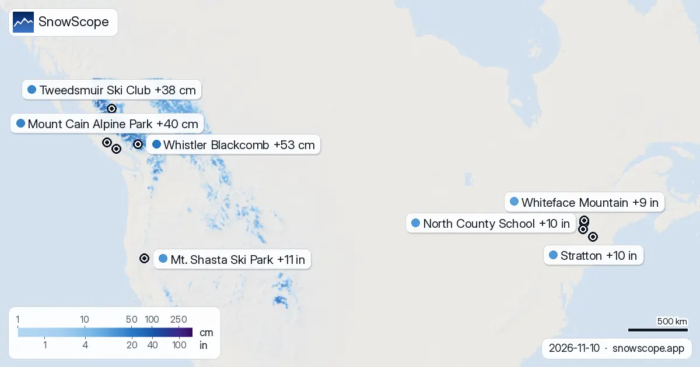

+53 cm en Whistler Blackcomb: la tabla de previsión de nieve a 72 horas (10 de noviembre)
Cada día listamos las estaciones que van a recibir más nieve nueva, en las próximas 24 horas y hasta el 13 de noviembre, en Europa, Marruecos y Norteamérica, junto con la cota de nieve. En el campo siempre llevamos una sonda; estas cifras dicen adónde ir, la sonda dice qué hay bajo los esquís.
Consulta la previsión de nieve en tiempo real de Whistler Blackcomb en la app SnowScopeEspesor de nieve, alertas de nieve polvo y mapa 3D, gratis.
Europa y Marruecos
En Piau-Engaly (Francia): 6 cm en las próximas 24 horas, 37 cm en 72 horas, cota de nieve en torno a 2600 m. La Grave (Francia) espera 2 cm en las próximas 24 horas y 36 cm en 72 horas, con la cota de nieve hacia 2900 m. En Les Deux Alpes (Francia): 2 cm en las próximas 24 horas, 35 cm en 72 horas, cota de nieve en torno a 2800 m.
| # | Estación | Región | +24 h | +72 h | Cota de nieve |
|---|---|---|---|---|---|
| 1 | Piau-Engaly | Pirineos · Francia | 6 cm | 37 cm | 2600 m |
| 2 | La Grave | Alpes · Francia | 2 cm | 36 cm | 2900 m |
| 3 | Les Deux Alpes | Alpes · Francia | 2 cm | 35 cm | 2800 m |
| 4 | Platak | Alpes · Croatia | 0 cm | 31 cm | 3000 m |
| 5 | Orcières Merlette | Alpes · Francia | 1 cm | 30 cm | 2800 m |
| 6 | Alpe d'Huez Grand Domaine | Alpes · Francia | 2 cm | 29 cm | 2800 m |
| 7 | Les Orres | Alpes · Francia | 1 cm | 29 cm | 2700 m |
| 8 | skijalište Vučići | Alpes · Croatia | 0 cm | 28 cm | 3000 m |
| # | Estación | Región | +24 h | +72 h | Cota de nieve |
|---|---|---|---|---|---|
| 1 | Mt. Shasta Ski Park | Oeste de EE. UU. · Estados Unidos | 0 in (0 cm) | 11 in (27 cm) | 12.100 ft (3700 m) |
| 2 | North County School | Noreste de EE. UU. · Estados Unidos | 0 in (1 cm) | 10 in (25 cm) | – |
| 3 | Stratton | Noreste de EE. UU. · Estados Unidos | 0 in (0 cm) | 10 in (25 cm) | 4900 ft (1500 m) |
| 4 | Whiteface Mountain | Noreste de EE. UU. · Estados Unidos | 0 in (1 cm) | 9 in (24 cm) | 3300 ft (1000 m) |
| 5 | Gore Mountain | Noreste de EE. UU. · Estados Unidos | 0 in (0 cm) | 9 in (23 cm) | 3300 ft (1000 m) |
| 6 | Killington Resort | Noreste de EE. UU. · Estados Unidos | 0 in (0 cm) | 8 in (21 cm) | 3600 ft (1100 m) |
| 7 | Mount Snow | Noreste de EE. UU. · Estados Unidos | 0 in (0 cm) | 8 in (21 cm) | 4900 ft (1500 m) |
| 8 | Magic Mountain | Noreste de EE. UU. · Estados Unidos | 0 in (0 cm) | 8 in (20 cm) | 3600 ft (1100 m) |
| # | Estación | Región | +24 h | +72 h | Cota de nieve |
|---|---|---|---|---|---|
| 1 | Whistler Blackcomb | Oeste de Canadá · Canadá | 18 cm | 53 cm | 2400 m |
| 2 | Mount Cain Alpine Park | Oeste de Canadá · Canadá | 0 cm | 40 cm | 2600 m |
| 3 | Tweedsmuir Ski Club | Oeste de Canadá · Canadá | 23 cm | 38 cm | 1600 m |
| 4 | Mount Washington Alpine Resort | Oeste de Canadá · Canadá | 0 cm | 4 cm | 2700 m |

Estados Unidos
Mt. Shasta Ski Park (Estados Unidos) espera 0 in (0 cm) en las próximas 24 horas y 11 in (27 cm) en 72 horas, con la cota de nieve hacia 12.100 ft (3700 m). En North County School (Estados Unidos): 0 in (1 cm) en las próximas 24 horas, 10 in (25 cm) en 72 horas. En Stratton (Estados Unidos): 0 in (0 cm) en las próximas 24 horas, 10 in (25 cm) en 72 horas, cota de nieve en torno a 4900 ft (1500 m).
Canadá
Whistler Blackcomb (Canadá) espera 18 cm en las próximas 24 horas y 53 cm en 72 horas, con la cota de nieve hacia 2400 m. En Mount Cain Alpine Park (Canadá): 0 cm en las próximas 24 horas, 40 cm en 72 horas, cota de nieve en torno a 2600 m. Tweedsmuir Ski Club (Canadá) espera 23 cm en las próximas 24 horas y 38 cm en 72 horas, con la cota de nieve hacia 1600 m.
Los días que vienen
Ponemos la cota de nieve unos 300 m por debajo de la cota de congelación prevista. Esquía por encima para nieve seca; por debajo, espera nieve húmeda o lluvia.
Nuestras cifras de las estaciones de esquí son estimaciones para las pistas altas. Las de las estaciones de medida son medidas reales, pero de un solo punto y en la fecha indicada.
Las previsiones a varios días pueden cambiar: vuelve a mirar el mapa el día antes de viajar.
Consejos para esquiadores
- La mejor nieve polvo dura una mañana, no una semana. Sal temprano, antes de que lleguen el sol y la gente.
- Cuando la cota de congelación sube por encima de la estación, parte de la nieve se funde al caer: cuenta con nieve húmeda y quédate cerca de la cima.
- Antes de salir fuera de pista o de travesía, lee el boletín oficial de aludes (enlaces abajo).
- Nieve en el mapa no significa que la estación esté abierta: consulta remontes y fechas de apertura en su web.
- Activa una alerta de nieve polvo en la app SnowScope para saber cuándo Whistler Blackcomb recibe nieve nueva.
Sobre estas cifras
Los espesores de nieve de las estaciones son la nieve más profunda en las pistas altas según el modelo de nieve de SnowScope (unos 1 km, cálculo del 10 de noviembre); son estimaciones para una zona, no una medida en un punto. Los valores de las estaciones de medida son medidas en la fecha indicada. Las previsiones pueden cambiar. Consulta siempre el boletín oficial de aludes antes de salir fuera de pista.
Boletines oficiales de aludes: EAWS (Europe) · avalanche.org (US) · Avalanche Canada
Citar este informe
Para investigación, docencia o prensa: cifras y gráficos reutilizables libremente bajo CC BY 4.0 con esta cita.
SnowScope (2026), +53 cm en Whistler Blackcomb: la tabla de previsión de nieve a 72 horas (10 de noviembre), https://snowscope.app/blog/es/2026/11/where-most-snow-falls-next-72-hours-10-november-2026.html, consultado el 2026-11-10
SnowScope (Atlas Labs). (2026, November 10). +53 cm en Whistler Blackcomb: la tabla de previsión de nieve a 72 horas (10 de noviembre). SnowScope snow reports. https://snowscope.app/blog/es/2026/11/where-most-snow-falls-next-72-hours-10-november-2026.html
BibTeX
@misc{snowscope2026wheremostsnowfallsnext72,
author = {{SnowScope (Atlas Labs)}},
title = {+53 cm en Whistler Blackcomb: la tabla de previsión de nieve a 72 horas (10 de noviembre)},
year = {2026},
month = nov,
howpublished = {\url{https://snowscope.app/blog/es/2026/11/where-most-snow-falls-next-72-hours-10-november-2026.html}},
note = {Published 2026-11-10 10:05 UTC; accessed 2026-11-10}
}· CC BY 4.0 · Métodos, datos y herramientas →
Whistler Blackcomb: nieve y temperatura según la altura, este invierno vs el pasado (herramientas) →
Sigue Whistler Blackcomb
Gratis: un aviso cuando llega la nieve y la previsión cada mañana.
Más partes de nieve

La isoterma de 0 °C en el noreste de EE. UU., próximos días: 1936 ft (590 m) a 6037 ft (1840 m). Horas más templadas: cota de nieve unos 984 ft …

Una imagen, 100 cordilleras en los Alpes, los Pirineos, el Atlas y Norteamérica: Canadá lidera con un 89 % de cobertura de nieve, los Alpes llegan al 45 %, el Atlas y el noreste de EE. UU. siguen sin nieve.
Comparamos el mapa de espesor de nieve de SnowScope con 2.012 estaciones de medida: RMSE 7,7 cm, sesgo -0,5 cm, nieve o no nieve acertado el 88 % de las veces. Lo que funciona, lo que aún no y lo que mejoramos después.